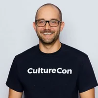

Information takes too long to pull together
You know the answer is in there somewhere. We connect reports, documents, and systems so people can find what they need and see what needs attention.
AI consulting and implementation
Fresh Coast AI helps you put AI to work on the things that make the day harder than it needs to be. We get to know your business, build alongside your team, and help people use what we create together.
Start with a free 30-minute conversation about what is getting in the way.
Client case study / Stanton & Company
Stanton's account teams already kept detailed trackers. Leadership needed a clear view across them. FCAI built a weekly digest using Stanton's existing Google Sheets and Google accounts. Code calculates the numbers, AI summarizes priorities, and Stanton's team runs the system.
Read the Stanton case study“Now it's clear right away how we're tracking against our targets.”
01 / Business problems
The report that eats up Monday morning. The same information entered three times. The AI tools everyone is trying, with no shared plan. Start there.
You know the answer is in there somewhere. We connect reports, documents, and systems so people can find what they need and see what needs attention.
Your team has better things to do than copy information between tools or chase the same updates. We work through those tasks with them and find the parts worth automating.
Some people are experimenting. Others are waiting to see what happens. We help you decide what is useful, what needs guardrails, and what is worth taking further.
02 / Team adoption
Your team knows the workarounds, the exceptions, and the reasons the last change did not stick. We start by listening to them. That knowledge belongs in what gets built.
Then we try it together on real work. People get time to ask questions, point out what is awkward, and practice until they understand how to use it.
Why the human part matters"Fresh Coast AI made AI feel practical instead of overwhelming. They didn't just hand us tools, they took the time to understand how our team actually works and built solutions that fit our real workflows. The best part is we actually understand what was built. We're not dependent on anyone to keep it running."

Nick LombardinoCo-founder, CultureCon03 / A little perspective
A convincing answer can still be wrong. We work out where AI helps, what people need to check, and what happens when it gets something wrong.
Sometimes the useful next step is a better process or a tool you already have. We will say so. Our recommendations do not come with software commissions.
See the process and pricing04 / Common questions
No. Tell us what you want to improve and what you use today. We will help you work out whether AI fits, and whether the next step is a process change, an existing tool, or something we build together.
That is a conversation worth having early. We listen to what people are worried about, look at a task they recognize, and give them a chance to try it and question the result. Their experience helps shape the work.
Yes. We start with the tools you already use and involve the people responsible for them. Together, we work through what can connect, what information can be used, and what your IT team needs before a project starts.
Project work is fixed-fee, with an agreed scope. Current project prices range from $5,000 to $55,000. Ongoing advisory and third-party software costs are separate. See How We Work for details. View process and pricing
Yes. We can keep working together as priorities change, new people join, or the next useful idea comes up. Ongoing advisory and support have their own agreed work, availability, and fee.
Next steps
Bring the thing that is taking too long, the question nobody can answer easily, or the idea you want to talk through. You do not need a finished plan to start a conversation.